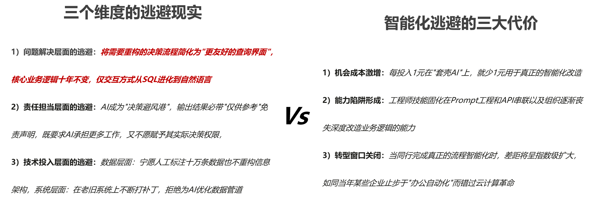
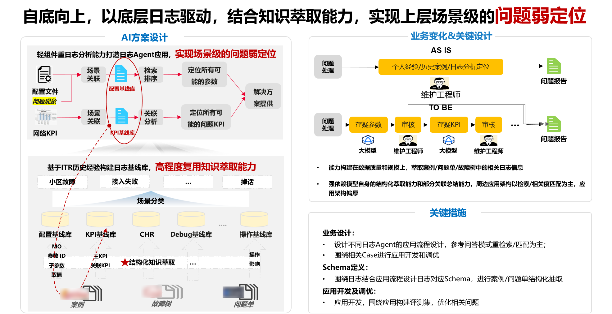
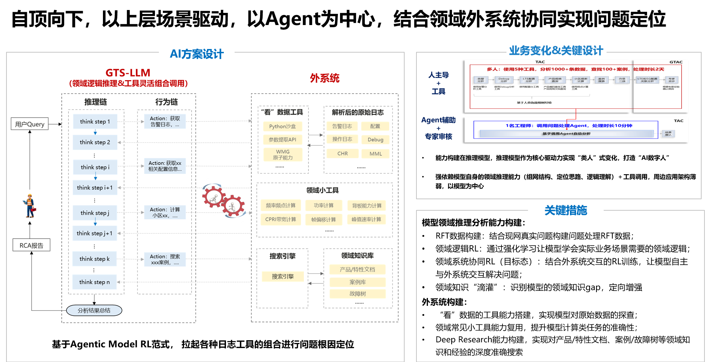

2025-08-18
AI Agent 大热背后的冷思考：技术理想与业务落地的鸿沟如何跨越？
从 ToB 视角讨论 AI Agent 的冷热反差、套壳式繁荣，以及业务落地中“短期做薄、长期做厚”的实践路径。
2023 年，以大模型为基座的 AI Agent 成为全球科技领域的焦点。而 2025 年，更被业界誉为 AI Agent 的元年，各大科技巨头纷纷竞相推出自家的 AI Agent 产品。AI Agent 承载着“颠覆生产力”的厚望，它仿佛拥有智慧，能够精准理解人类意图，自主拆解复杂任务，灵活调用各类工具，最终高效完成任务闭环。
然而，当视角转向企业级（ToB）市场时，客户和内部商业领袖真正关心的是：“能否用 AI 解决我的核心业务问题？比如替代 50% 的重复性人工决策，E2E 内部效率提升 30%，工单问题减半。”这些需求往往涉及复杂业务流程、高可靠性要求和垂直领域知识，而实际上，AI Agent 当前在复杂业务场景中的稳定性、可解释性、可靠性、落地周期以及 ROI 兑现能力，仍然远未达到理想状态。

企业对 AI 的“速胜期待”，与技术演进的“渐进现实”
当前，企业在 AI Agent 的落地过程中，普遍存在两种矛盾心态：既希望 AI 能快速上线并带来显著业务提升，又不愿接受技术早期的不完美；对 AI 的长期潜力充满信心，却对短期试错成本缺乏耐心。
- 过早放弃：企业在 PoC 阶段发现效果未达预期，便直接叫停，错失继续优化的机会。
- 过度追求短期 ROI：只关注“能立刻赚钱”的场景，忽视更具战略价值的长期 AI 能力建设。
- 缺乏技术培育环境：AI 需要持续的数据反馈和算法迭代，但企业往往期待“一次部署，终身受益”。
这种矛盾导致很多项目卡在“想做很大，容忍很小”的张力里，最后不是停在 Demo，就是停在流程拼装层面，无法继续往业务核心推进。
Agent 繁荣下的虚假繁荣：我们真的在构建智能，还是仅仅在“套壳”？
在“既要又要还要”的业务压力下，势必会出现大量套壳 Agent。很多方案是把历史积累的大量工具通过 Prompt、Function Call、MCP 或流程引擎调度起来，形成一个个定制化的烟囱 Agent。工具的输入输出没有变化，只是在交互门槛和便捷性上有所提升。
从这个角度看，LLM + MCP 形成的 LUI 到底带来了什么？很多 Agent 本质上仍是“旧酒装新瓶”。LLM 只充当了更友好的交互层，而真正的业务逻辑、数据处理、决策流程仍然由工程师手动编排，AI 并没有真正“理解”或“解决”问题。
- Prompt + Function Call / MCP 型 Agent：通过自然语言解析用户意图，但实际执行仍依赖固定工具链，LLM 只做路由分发。
- 伪调度型 Agent：利用流程引擎编排工具，LLM 只生成参数或触发节点，业务逻辑完全硬编码。
- 问答包装型 Agent：将原有知识库或文档接口套上 LLM 的问答交互，但答案质量仍取决于底层数据，未形成真正推理。
这些 Agent 的共同点是：工具没有进化，交互更友好。它们降低了工具的使用门槛，却没有触及业务核心。

关键问题：我们是否在用 AI 逃避真正的智能化？
当前 AI 应用看似遍地开花，实则暗藏隐患。我们正在用“AI 包装”掩盖业务数字化进程中的本质问题。当技术团队疲于把现有工具套上 LLM 外壳，业务团队满足于“能用自然语言操作旧系统”的伪升级时，真正的智能化转型反而被系统性延误。
AI Agent 实践建议：短期做薄，长期做厚
当前 AI Agent 在业务落地中面临的核心矛盾，本质上是“技术渐进性”与“业务紧迫性”之间的天然冲突。技术的成熟需要时间迭代，而业务又需要快速看到价值。这一矛盾短期内很难彻底解决，但作为 AI 从业者，依然可以在现有约束下找到一些更优的路径。

1. 短期数据 + 技术应用线：围绕工程师旅程做厚知识底座，做薄应用层
以维护工程师旅程为例，真正的个人壁垒仍然在知识与经验积累。传统模式依赖工程师个人经验，存在知识碎片化、传承效率低等问题。与其追求颠覆式的“万能 Agent”，不如先打造坚实的知识基础设施，让 AI 成为领域知识的“集大成者”。
- 结构化萃取：将散落的故障案例、处理手册、专家笔记转化为标准化知识单元。
- 关系网络构建：通过因果分析建立问题之间的关联图谱。
- 动态演进机制：设置知识置信度评分，随实际处理结果反馈持续优化。
上层应用可以先用问答、匹配、聚类、关联分析等相对稳定的 ML 路线辅助维护域工程师定位问题。即使模型能力暂时不足，扎实的知识库仍然可以提供基础价值；而当模型升级时，这套知识体系又能立刻释放更大的效能。
从架构设计上看，这其实是一种反脆弱思路：模型能力波动时，底座仍然可用；模型能力增强时，底座又不会被浪费。大家的投入不会因为技术波动而归零。
2. 长期创新技术线：坚持“真 Agent”方向，避免陷入“套壳陷阱”
从长期主义来看，仍然要围绕端到端强化学习的理念持续推进模型与外系统的 rollout。放到问题处理场景里，就是让领域推理模型结合外部日志获取工具，基于日志与环境反馈反复探索，最终定位根因。
ToC 场景已经可以看到令人惊讶的效果，但 ToB 的数据复杂性、工具多样性以及训练本身的不确定性，决定了这一方向的落地难度极高。它需要真正的领域专家与算法专家形成 1 + 1 > 2 的合作，而不是简单拼装几个工具再冠以 Agent 的名字。
结语：AI Agent 的落地是一场马拉松，而不是冲刺
AI Agent 的潜力毋庸置疑，但它的成熟需要更多耐心、包容度以及宽约束下的持续投入。历史经验表明，颠覆性技术从早期热潮到规模化应用往往要经历 5 到 10 年，而 AI Agent 依然处于早期阶段。
只有以更长远的视角看待 AI，摒弃套壳思维，深耕价值创造，允许技术试错，并建立适应性的管理机制，企业才有可能真正抓住 AI Agent 带来的变革机遇。